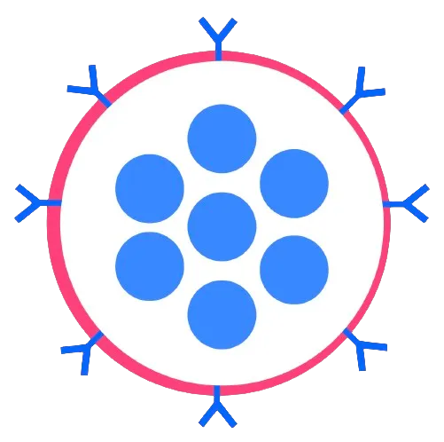

Latest Updates.
Check out my latest articles, blogs, updates, and deep dives, wherever they live!
A personal website, a new project, and a return
I return to my TKS-era blog with a new entry. In it, I talk about the process of building this personal website, an overview of life at Cambridge University, and my experience with two recent Cambridge coursework projects: the Mars Lander and the Structural Design Challenge.
Read blog →
Sanavo: Ending the Death Sentence of Glioblastoma
A deep technical dive into Sanavo, a two-part idea to vastly improve treatment of glioblastoma (brain cancer) via improved chemotherapy drug delivery and a bio-sensor to detect recurrence early. Co-written with Mark and Natan (see the Sanavo project in my portfolio for more details).
Read article →Turning 18 on the Slopes of Mt Kilimanjaro
Two days after my 18th birthday, just after sunrise, I reached Uhuru Peak, the 5,895m high summit of Mt Kilimanjaro, the highest on the African continent. This post dives into my experiences and reflections during the climb.
Read post →Capsule Neural Networks: Giving 20/20 Vision to Artificial Intelligence
An analysis of the weaknesses in the most widespread type of computer vision algorithm, the Convolutional Neural Network; and an explanation + analysis of the strengths of a more complex alternative, the Capsule Neural Network.
Read article →